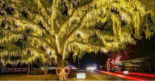

Experience the local flavor of Charleston's residential island community and trusted party services
James Island, South Carolina serves as Charleston's largest residential island community, offering an authentic local entertainment experience that bridges the gap between downtown Charleston's sophistication and the beach town casualness of Folly Beach. This diverse island community has developed its own entertainment identity centered around neighborhood gathering spots, community events, and accessible venues that attract both residents and visitors seeking genuine Charleston area experiences without tourist district pricing or crowds. For celebration groups staying on James Island or seeking alternatives to downtown venues, James Island private party entertainment provides access to local professionals who understand the island's residential character and the practical advantages of hosting events in this centrally-located community, making them the trusted choice for vacation rental parties, local celebrations, and bachelorette groups wanting authentic Charleston area experiences with convenient access to all nearby destinations.
The entertainment landscape on James Island reflects its position as a working community where locals actually live rather than just visit, creating venues and gathering spaces that prioritize value, authenticity, and neighborhood atmosphere over tourist-focused experiences. Local entertainers serving James Island bring specialized knowledge of the residential nature of most properties, appropriate entertainment approaches for mixed residential-vacation areas, and understanding of the island's role as a strategic location for groups wanting to explore the entire Charleston area, ensuring private parties benefit from both local character and geographic convenience.
The main commercial artery running through James Island features the concentration of entertainment venues, restaurants, and bars that serve both island residents and visitors traveling between Charleston and Folly Beach. This corridor provides convenient access to local entertainment options without the formality or expense of downtown Charleston establishments.
These established residential areas offer the vacation rental properties where private party entertainment thrives, providing spacious homes with yards and privacy that make them ideal for celebration groups. The neighborhood character supports private events while maintaining the quiet residential atmosphere that defines most of James Island.
The eastern portion of James Island includes newer developments and waterfront areas that provide diverse accommodation options for groups. These neighborhoods offer proximity to both Folly Beach and downtown Charleston, making them strategic locations for celebration groups wanting to explore multiple destinations.
The park and surrounding area provides outdoor recreation facilities, event spaces, and natural settings that complement the island's entertainment offerings. This area attracts groups seeking daytime activities before evening celebrations and offers alternatives to beach-focused recreation.
James Island's central location means celebration groups easily access Charleston nightlife downtown while maintaining the convenience and value of island accommodations.
James Island's growing popularity among entertainment seekers stems from its strategic position within the Charleston area and the practical advantages it offers celebration groups seeking authentic local experiences with geographic flexibility. The island provides something increasingly valuable—genuine Charleston area living at accessible price points while maintaining convenient access to all major entertainment destinations.
Positioned between downtown Charleston, Folly Beach, and other key destinations, James Island serves as an ideal base camp for celebration groups wanting to explore the entire Charleston area. This central location means entertainment seekers can reach downtown in 10 minutes, Folly Beach in 10 minutes, and Isle of Palms in 30 minutes, maximizing itinerary flexibility.
Unlike tourist-focused areas, James Island maintains its identity as a working residential community where actual Charlestonians live, shop, and socialize. This authenticity attracts entertainment seekers wanting to experience how locals actually enjoy the Charleston area rather than participating in manufactured tourist experiences.
Vacation rentals and accommodations on James Island typically offer better value than comparable properties in downtown Charleston or beach destinations, allowing celebration groups to allocate more budget toward entertainment, dining, and activities rather than just lodging. This economic advantage appeals to groups working within budgets without sacrificing quality.
The island's predominantly residential character means vacation rental properties often feature yards, privacy, and spacing that support private party entertainment better than dense urban or beach environments. Groups can host celebrations without the close neighbor proximity common in downtown or beachfront properties.
James Island's entertainment venues provide approachable alternatives to downtown's sometimes intimidating or expensive establishments. Local bars, restaurants, and gathering spots welcome celebration groups with friendly service and reasonable pricing that encourages exploration and spontaneity.
Celebration groups often find that working with most rated Charleston dancers who serve James Island brings professional entertainment quality at more accessible price points than premium beach destinations demand.
James Island has quietly become a strategic choice for bachelorette parties seeking Charleston area experiences without the premium costs or single-destination limitations of staying exclusively downtown or at the beaches. The island's central location and residential character create ideal conditions for celebration groups wanting flexibility to explore multiple entertainment districts while maintaining a comfortable, private home base.
Bachelorette parties rarely want to limit themselves to one entertainment district for an entire weekend. James Island's central position allows groups to structure diverse itineraries—brunch in downtown Charleston, beach time at Folly, evening entertainment on Isle of Palms—without requiring accommodation changes or extensive travel times that waste celebration hours.
Savvy bachelorette party planners recognize that James Island vacation rentals often provide significantly more space and amenities for the price compared to downtown or beach properties. This value proposition allows groups to book larger homes with pools, game rooms, and outdoor entertainment spaces while staying within budget constraints.
The residential nature of James Island means many vacation rental properties feature the yards, privacy, and layouts that make them ideal for hosting private entertainment. Unlike high-density areas where noise concerns and neighbor proximity limit celebration possibilities, James Island properties typically support private parties without significant restrictions.
Bachelorette groups staying on James Island experience how Charleston area residents actually live—shopping at local markets, dining at neighborhood restaurants, enjoying community gathering spots—while maintaining easy access to tourist-focused entertainment when desired. This balance creates more authentic Charleston experiences than staying exclusively in tourist districts.
The island's location relative to Charleston's entertainment destinations means groups can use rideshare services efficiently to reach any district without the premium pricing or extended wait times associated with trips from more remote locations. This convenience simplifies logistics that often complicate bachelorette party planning.
James Island's variety of property types—from modest beach houses to spacious family homes—means bachelorette parties can find accommodations matching their specific group size, budget, and preference without forcing compromises. This flexibility proves valuable when friend groups include participants with varying financial situations.
The established residential character of James Island neighborhoods provides safety comfort for bachelorette party organizers concerned about unfamiliar areas. The island's low crime rates and family-oriented communities create environments where groups feel secure returning to accommodations after evening entertainment.
Hosting private parties on James Island requires entertainment services that understand both the residential nature of most properties and the practical considerations of working within established neighborhoods. Professional local entertainers bring expertise that enhances celebration experiences while respecting the community character and property expectations that define successful James Island events.
Experienced James Island entertainers know how to deliver quality entertainment while managing noise levels, parking logistics, and neighbor considerations inherent to residential properties. This awareness prevents issues that could result in complaints, police calls, or problems with property owners that derail celebrations and create stress for hosts.
Professional entertainers working regularly on James Island understand genuine Charleston culture beyond tourist stereotypes. They bring authentic local energy to performances rather than generic party entertainment, creating experiences that feel connected to the real Charleston that James Island represents.
James Island's diverse housing stock means entertainers work in everything from modest ranch homes to spacious waterfront properties. Established local performers adapt smoothly to various property layouts, understanding how to optimize entertainment for different space configurations without requiring elaborate setups or specific venue features.
Entertainers serving James Island typically maintain pricing structures accessible to groups choosing the island for its value proposition. This doesn't mean reduced quality—rather, professionals recognize that James Island clients often seek reasonable pricing alongside professional service, creating market conditions that benefit celebration groups.
Unlike purely vacation destinations, James Island mixes vacation rentals among primary residences. Professional entertainers understand these dynamics, managing celebrations in ways that respect permanent residents while ensuring guests enjoy themselves. This balance proves essential in maintaining positive relationships between vacation rental operations and established communities.
Local entertainers familiar with James Island understand the island's layout, traffic patterns, and timing considerations that impact event logistics. They arrive reliably despite the island's sometimes confusing street layout and know alternative routes when Folly Road experiences delays, ensuring punctual service.
Entertainers working on James Island typically serve the broader Charleston area, meaning they maintain professional networks spanning all local destinations. This connectivity proves valuable for groups wanting recommendations for restaurants, activities, or other services across the Charleston area based on authentic local knowledge.
James Island's residential character attracts entertainers who understand that successful private parties depend more on reading the room and adapting to group energy than following rigid performance formulas. This practical, responsive approach creates more genuine celebration experiences than entertainment services treating every event identically.
For groups planning James Island celebrations, learning about professional entertainment services clarifies how local performers enhance residential property parties beyond what public venues or unfamiliar entertainers can deliver.
James Island represents a strategic entertainment choice where authentic Charleston area living meets celebration convenience, and professional local entertainers serve as the essential element that transforms residential properties into memorable party venues. The combination of central location, residential privacy, accessible pricing, and experienced entertainment services creates an environment where private parties succeed by balancing genuine local character with practical advantages, establishing James Island as the smart choice for celebration groups who understand that the best Charleston experiences often happen away from tourist spotlights.